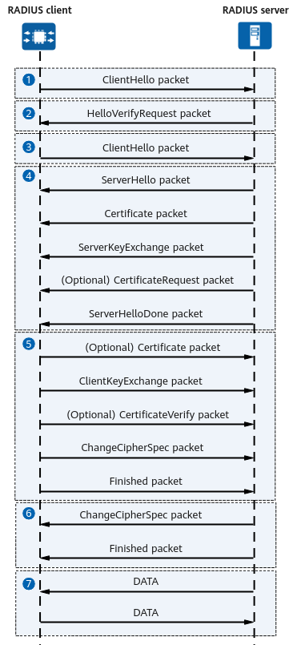

RADIUS over DTLS
DTLS ensures the confidentiality and integrity of data transmitted between the RADIUS client and server. In UDP transmission scenarios, DTLS prevents third parties from eavesdropping on messages, tampering with messages, forging identities, and more. DTLS runs between the transport layer and the application layer. The well-known port number for RADIUS over DTLS is 2083, without distinguishing authentication, accounting, and dynamic authorization.
Before establishing a session with the RADIUS server, the RADIUS client needs to perform a DTLS handshake. After the handshake is successful, the RADIUS client can complete registration and data transmission. Figure 1 shows the handshake process between the RADIUS client and server.
Figure 1 Handshake process between the RADIUS client and server
- The RADIUS client sends a ClientHello packet to initiate handshake and key negotiation. The packet contains the following information:
- 32-byte random number: used to generate a shared key.
- Cipher suite supported by the client.
- Compression mode supported by the client.
- After receiving the ClientHello packet, the RADIUS server uses the hash-based message authentication code (HMAC) algorithm to generate a cookie based on the IP address and other parameters of the client, encapsulates the cookie into a HelloVerifyRequest packet, and sends the packet to the RADIUS client.
- After receiving the HelloVerifyRequest packet, the RADIUS client fills the original cookie in the ClientHello packet and sends the packet to the RADIUS server again.
- After receiving the cookie, the RADIUS server verifies the validity of the cookie. If the cookie is valid, the RADIUS server sends a series of packets to the RADIUS client.
- SeverHello packet:
- 32-byte random number: used to generate a shared key.
- Subsequent session encryption mode selected by the server.
- Subsequent session compression mode selected by the server.
- Certificate packet: contains the server certificate and public key of the certificate.
- ServerKeyExchange packet: contains the key negotiation information of the server.
- (Optional) CertificateRequest packet: requests a certificate from the client.
- ServerHelloDone packet: It is only used as a flag to indicate that the server has sent all packets in the current phase.
- After receiving the packet from the RADIUS server, the RADIUS client generates a shared key using the negotiated encryption method based on the negotiation information of the RADIUS server and the 32-byte random number generated by the RADIUS client and RADIUS server. The RADIUS client sends a series of packets to the RADIUS server:
- (Optional) Certificate packet: indicates that the RADIUS client sends a certificate. This action is performed after the RADIUS server requests the certificate.
- ClientKeyExchange packet: contains the same information as a ServerKeyExchange packet.
- (Optional) CertificateVerify packet: authenticates the server certificate.
- ChangeCipherSpec packet: is encrypted using the shared key.
- Finished packet: indicates the end flag.
- The RADIUS server calculates the shared key based on the negotiation information from the RADIUS client. After decrypting the ChangeCipherSpec packet, the RADIUS server uses the key to encrypt its own ChangeCipherSpec packet, indicating that the shared key is found.
- After receiving and decrypting the ChangeCipherSpec packet, the RADIUS client knows that the server has obtained the shared key. Then, the RADIUS client and server use the shared key to encrypt communication.